Week2 Lesson Plan
介紹3D模型
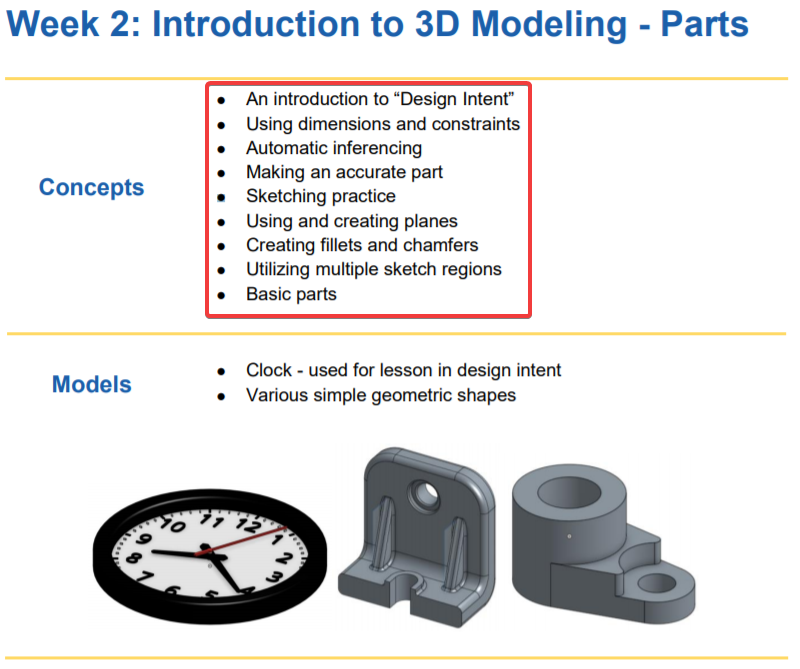
- 介紹設計意圖
- 設定尺寸與約束
- 自動推理
- 繪製精確的零件
- 草圖練習
- 使用及建立平面
- 建立圓角嶼倒角
- 使用多個草圖區域
- 基本零件
- 設計意圖 - 以時鐘當範例
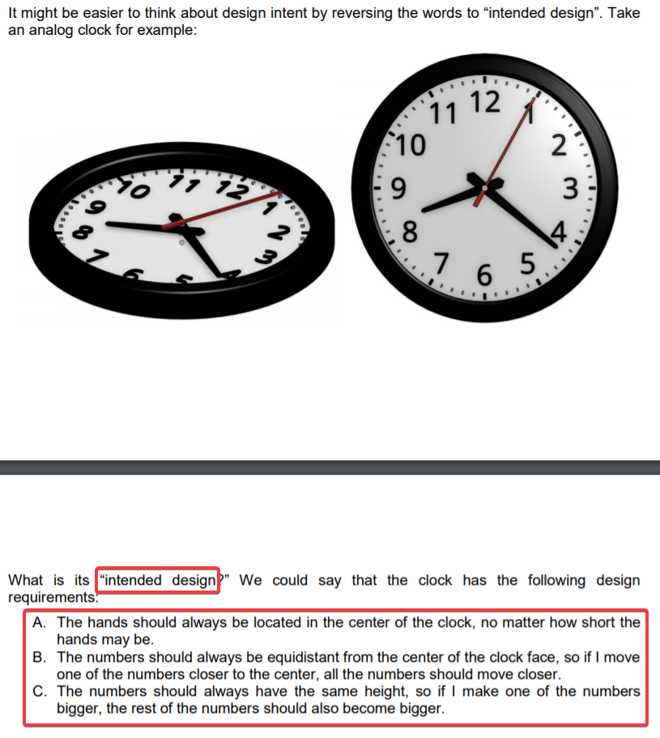
無論手有多短，手始終都應該位於時鐘中心
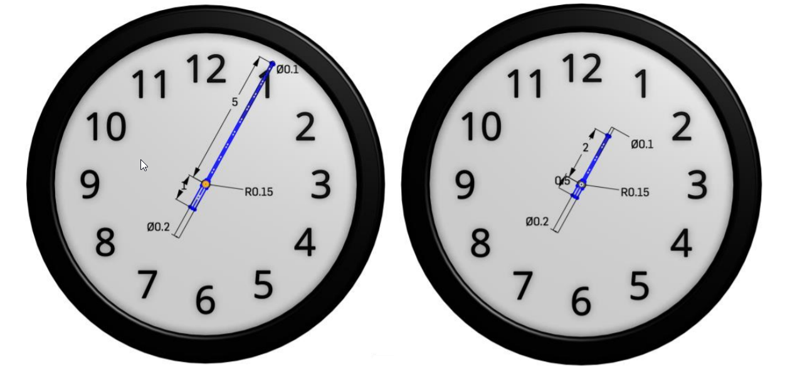
數字應該始終與鐘面的中心距離相等，如果我將其中一個數字移至靠近中心，所有數字應該更接近
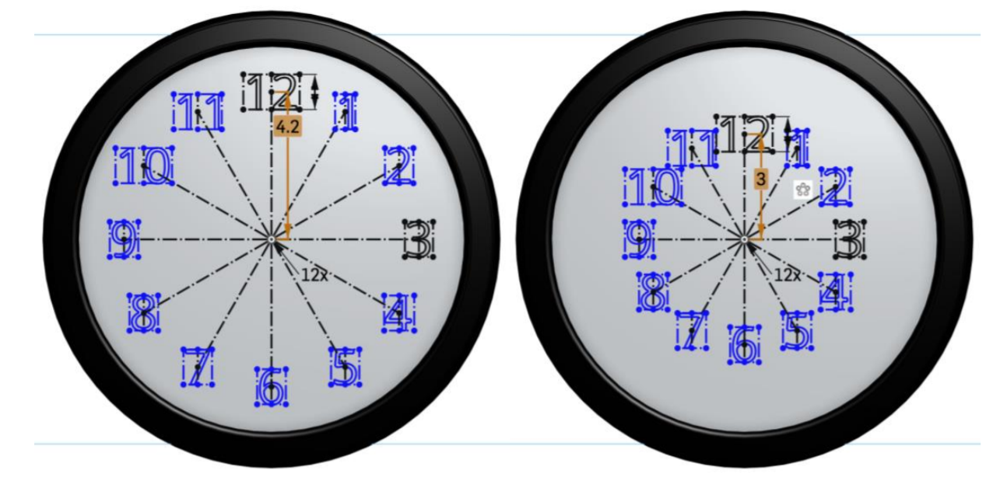
數字應該始終有一樣的高度，如果我使其中一個數字變大，剩下的的數字應該也要變大
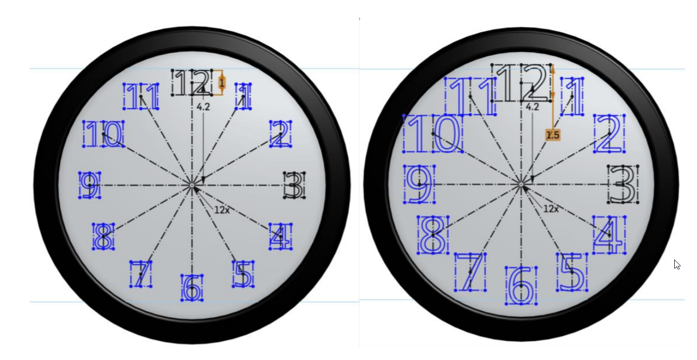
- Dimensions & Constraints in 2D Geometry (2D幾何的尺寸與約束)
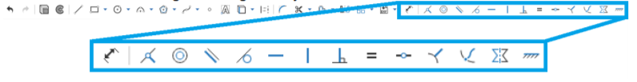
隨便畫一條直線，在將線的末端拖移到原點正上方，使得線以橙色的點顯現
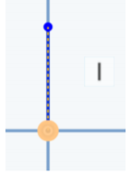
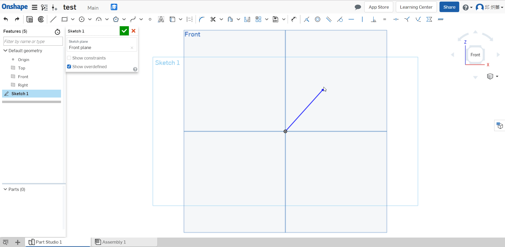
如果想要將側邊彼此相等，選擇四條線，在按上方的 " = "

如果不想將方形拖移到任何尺寸，可用尺寸約束他
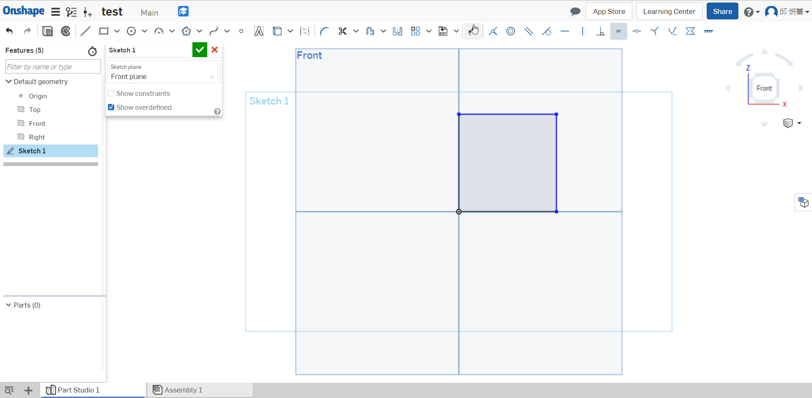
畫一個原在方形旁邊並相切
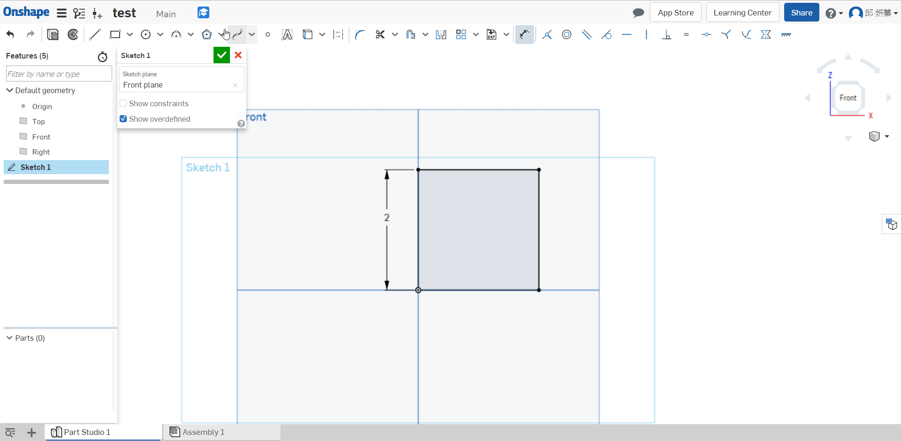
如果希望圓中心點與頂點邊緣對齊，可以用水平約束
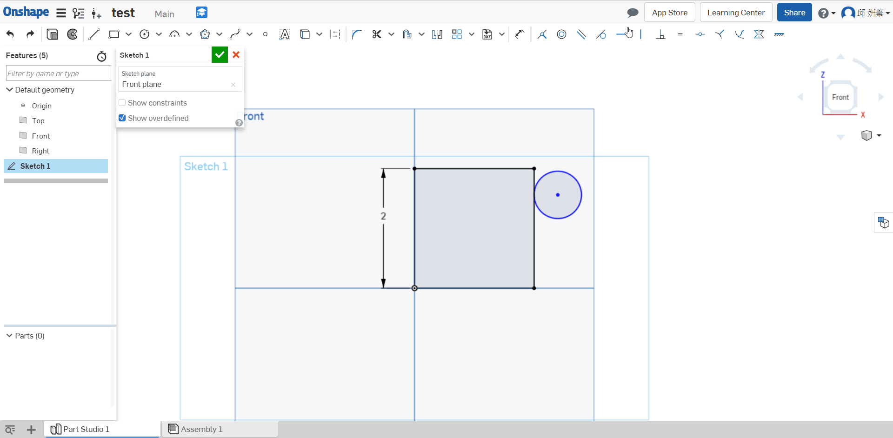
定義圓的大小
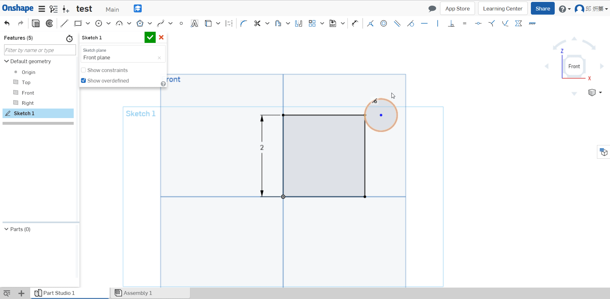
如果想看自己增加的約束可以將Show constraints的選項打勾
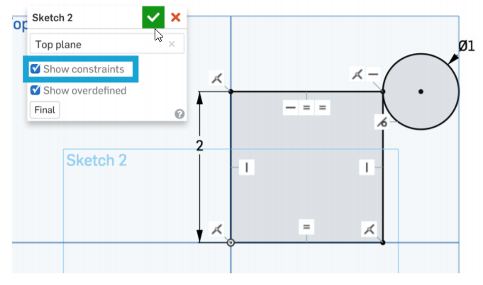
- 單位
可以改長度、角度、質量的單位
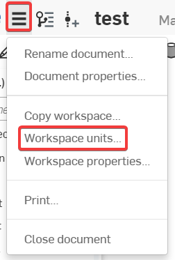
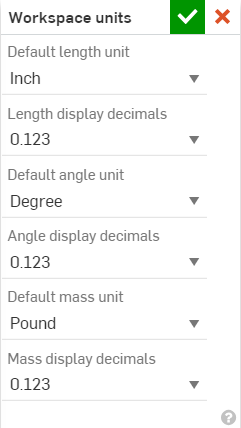
- 按P可以隱藏或取消隱藏平面
- 總結
Let’s take a second to reflect(反映) what we learned in this lesson.
1. We learned about how dimensions(尺寸) and constraints(約束) help define design intent(設計意圖).
2. We learned how to make accurate(準確) parts using:
a. different extruding options
b. planes
c. fillets and chamfers
d. multiple sketch regions
Next week we will learn about multi-body parts(多實體), where design intent will become even more important!
OnshapeWeek2 << Previous Next >> Week2 Homework